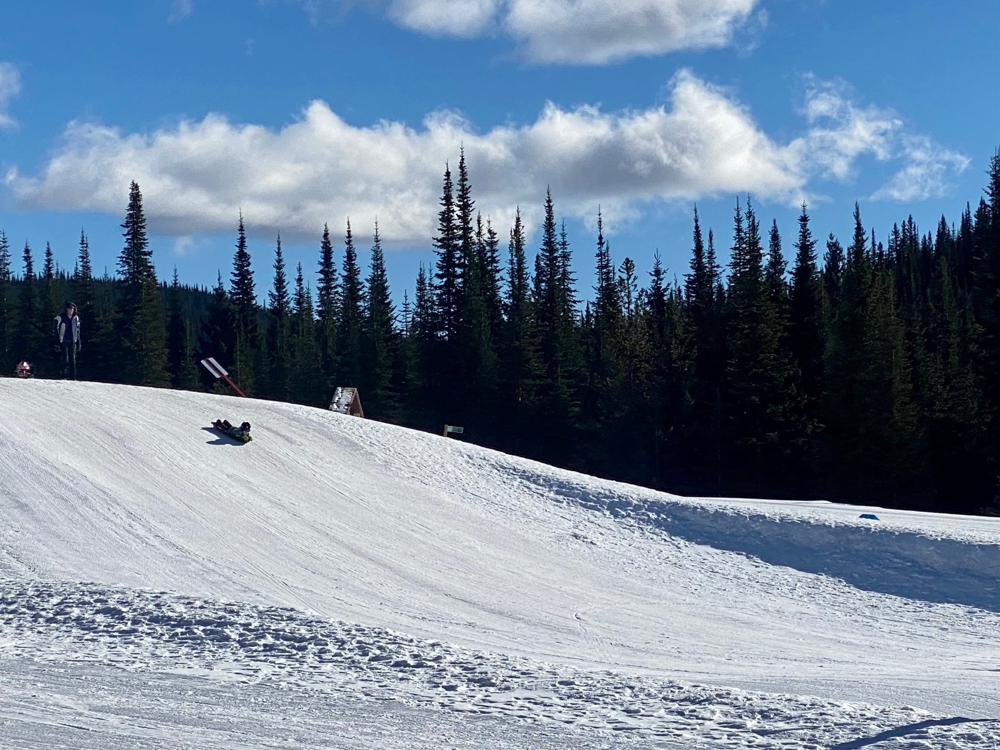
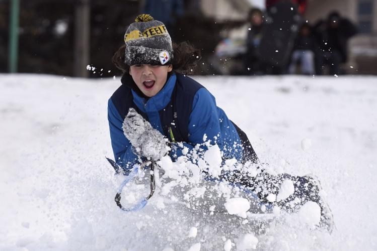

Exploring the Best Toboggan Hills
Tobogganing is a fun and exhilarating winter activity that families and friends can enjoy together. Finding the best hills can make all the difference in your tobogganing experience. Whether you are a seasoned sledder or a newcomer, knowing where to go is essential for a great time.
The steepness and length of the hill are crucial factors to consider. A hill that is too steep might be too dangerous for young children, while a hill that is too gentle may not provide enough excitement for older kids and adults. Look for hills that offer a good balance to suit everyone's needs.
Another important aspect is the safety of the hill. Ensure that the hill is free from obstacles such as trees, rocks, and fences. It's also helpful to choose hills that are not too crowded to avoid collisions and injuries. Many parks and recreational areas maintain their toboggan hills to provide a safe and enjoyable experience for everyone.
Leave a comment